This project explores gradient-domain processing, a simple technique with a broad set of applications including blending, tone-mapping, and non-photorealistic rendering. For the core project, we will focus on "Poisson blending". The primary goal of this assignment is to seamlessly blend an object or texture from a source image into a target image. The simplest method would be to just copy and paste the pixels from one image directly into the other. Unfortunately, this will create very noticeable seams, even if the backgrounds are well-matched. How can we get rid of these seams without doing too much perceptual damage to the source region?
One way to approach this is to use the Laplacian pyramid blending technique we implemented for the last project (and you will compare your new results to the one you got from Laplacian blending). Here we take a different approach. The insight we will use is that people often care much more about the gradient of an image than the overall intensity. So we can set up the problem as finding values for the target pixels that maximally preserve the gradient of the source region without changing any of the background pixels. Note that we are making a deliberate decision here to ignore the overall intensity! So a green hat could turn red, but it will still look like a hat.
In this example we'll compute the x and y gradients from an image s, then use all the gradients, plus one pixel intensity, to reconstruct an image v.
Denote the intensity of the source image at (x, y) as s(x,y) and the values of the image to solve for as v(x,y). For each pixel, then, we have two objectives:
| 1. | minimize ( v(x+1,y)-v(x,y) - (s(x+1,y)-s(x,y)) )^2 | the x-gradients of v should closely match the x-gradients of s |
| 2. | minimize ( v(x,y+1)-v(x,y) - (s(x,y+1)-s(x,y)) )^2 | the y-gradients of v should closely match the y-gradients of s |
| 3. | minimize (v(1,1)-s(1,1))^2 | The top left corners of the two images should be the same color |
After solving least squares I basically get the same image.
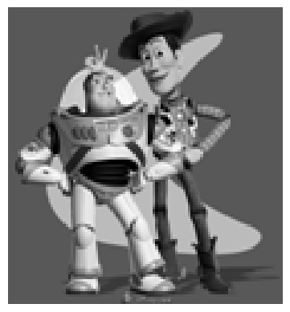
Bsically we want to solve the following equation:
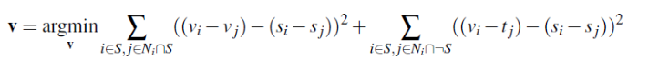
This gradient-domain fusion technique is particularly powerful because it maintains the visual integrity of the source object while naturally adapting to the lighting and color conditions of the target image, resulting in a more realistic composite than simple copy-and-paste methods
Here is simple copy and paste method.
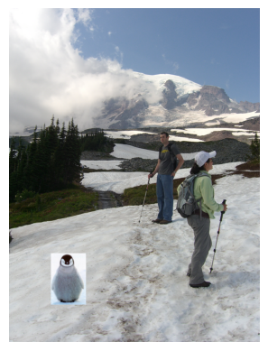
After we use Poisson Blending:
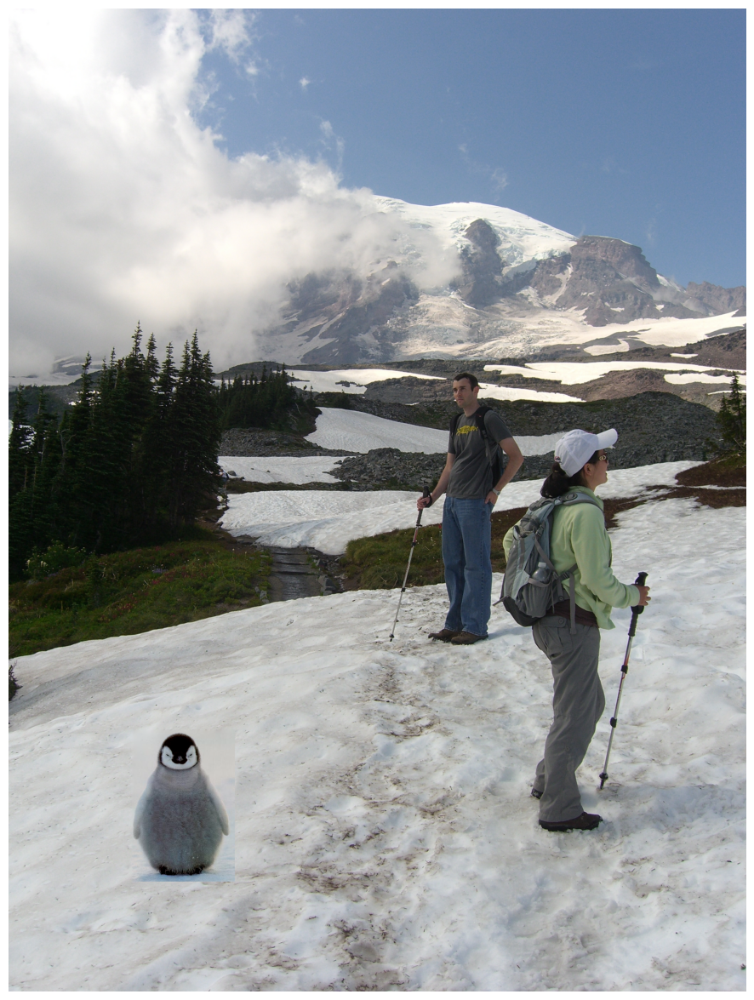
Here are few more examples:
Pasting a tiger in a park with the following mask.
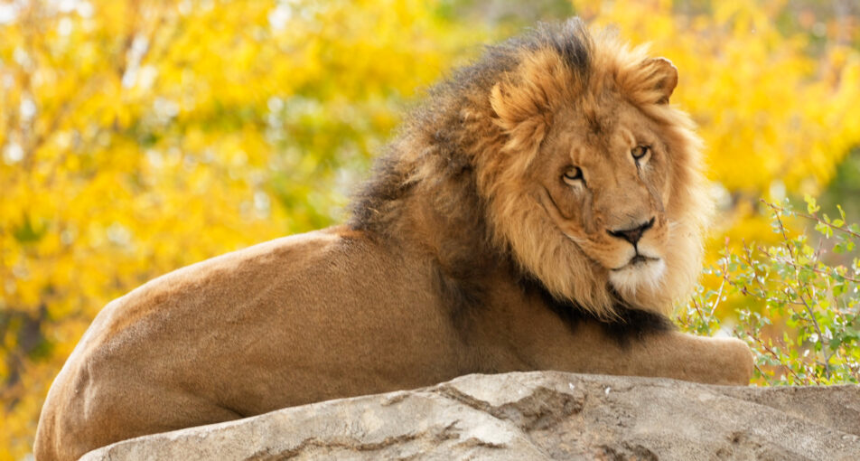
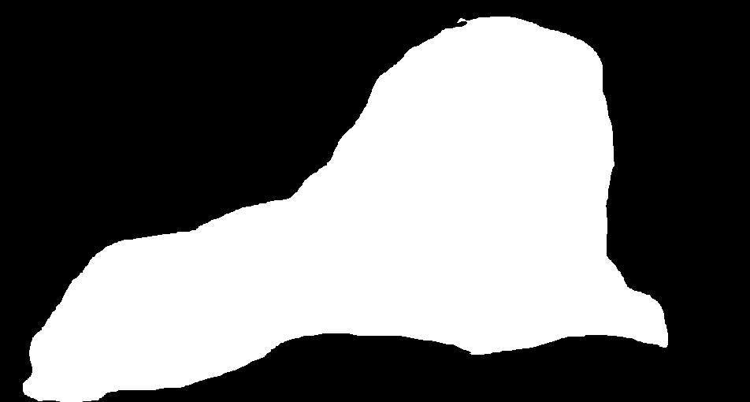
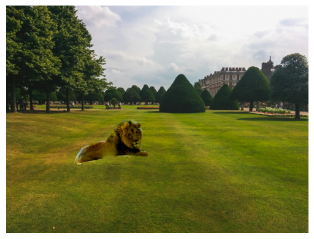
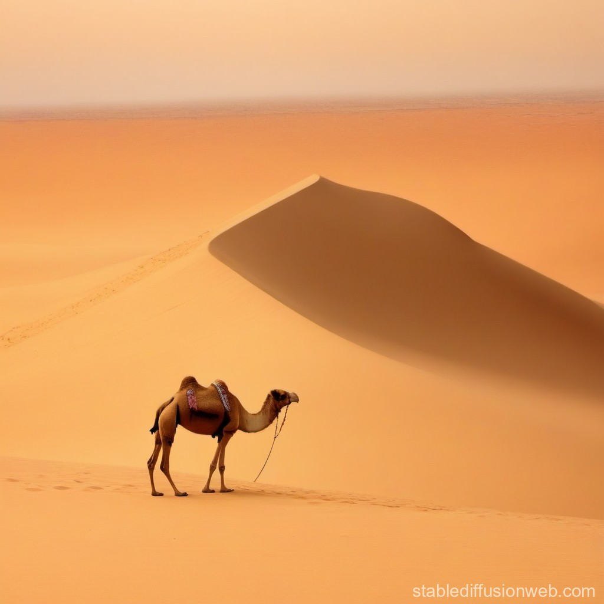
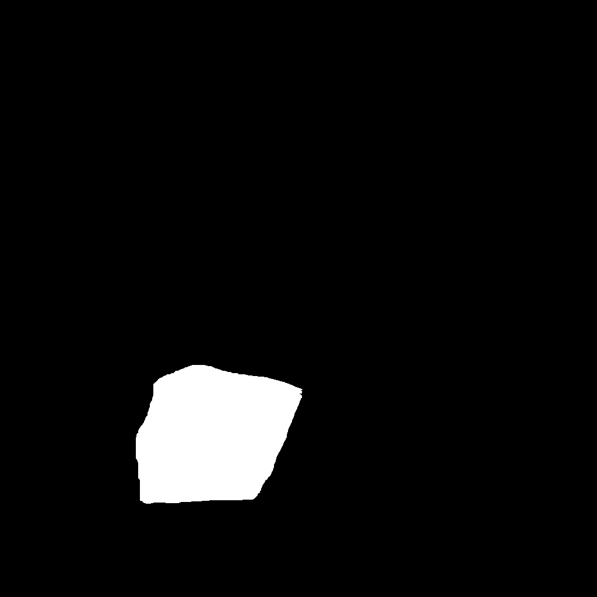
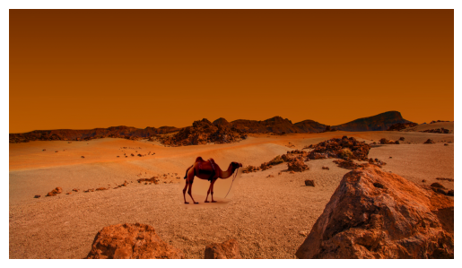
When backgrounds of both pictures are different we don't get a good result. For example, here the moon I pasted became white.
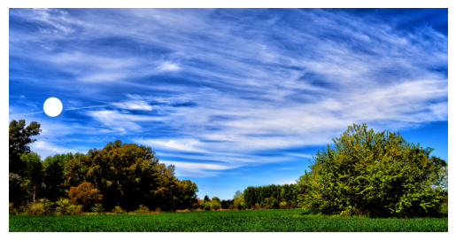
The color2gray algorithm improves upon standard grayscale conversion by preserving important contrast from the original color image. This algorithm converts a color image to grayscale in a smarter way than standard conversion. It first converts the image to HSV color space and then looks for the strongest changes in color between neighboring pixels (gradients) in both horizontal and vertical directions. When it finds these changes, it preserves them in the final grayscale image by solving a system of equations. This helps maintain important visual details that might be lost in a regular grayscale conversion. Here is an example.
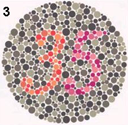
If we used a simple conversation algorithm we would just get gray circle and couldn't read any numbers.
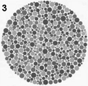
Now after using this algorithm we get:
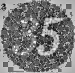